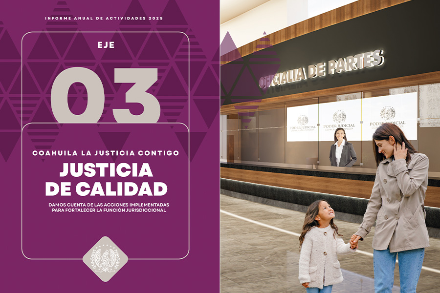
Eje 3 Justicia de Calidad
DAMOS CUENTA DE LAS ACCIONES IMPLEMENTADAS PARA FORTALECER LA FUNCIÓN JURISDICCIONAL
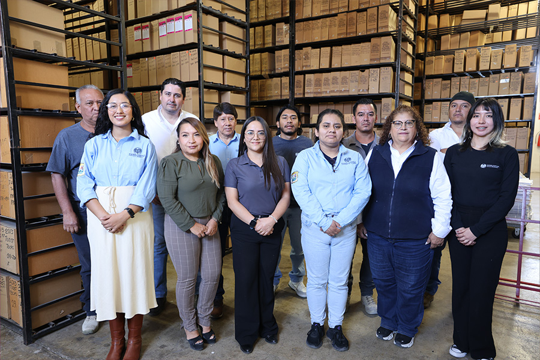
El Poder Judicial de Coahuila ha orientado sus esfuerzos a consolidar una justicia de calidad, expedita y eficiente, sustentado en un Modelo de Justicia Integral que fortalece el cumplimiento responsable de nuestra función constitucional: proteger los derechos y garantías de todas las personas. Nuestro quehacer diario se guía por la convicción de ofrecer a las y los coahuilenses un servicio público que sea accesible, comprensible y libre de cualquier forma de discriminación, colocando siempre a la persona usuaria en el centro de nuestra labor. Bajo esta visión, procuramos que cada asunto sea atendido respecto a sus particularidades, con sensibilidad y respeto pleno a los derechos de quienes intervienen en el proceso.
Como Poder Judicial comprometido con la legalidad, imparcialidad y responsabilidad social, rendimos cuenta sobre la actividad de los órganos jurisdiccionales de primera y segunda instancia, cuyos datos estadísticos reflejan el cumplimiento de nuestra función esencial: la impartición de justicia. Nuestro compromiso se refleja también en la creación de tribunales especializados, diseñados para responder a las problemáticas sociales actuales, fortalecer la certeza jurídica y elevar la calidad de las resoluciones, acercando la justicia a la ciudadanía.
Este esfuerzo sostenido ha sido reconocido a nivel nacional. En la Encuesta Nacional de Victimización y Percepción sobre Seguridad Pública (ENVIPE), elaborada por el Instituto Nacional de Estadística y Geografía (INEGI) en su edición 2025, indica que el 64.1 por ciento de la población de 18 años y más señala tener confianza en las personas juzgadoras del estado, reflejo del esfuerzo institucional y de la confianza ciudadana.
Asimismo, los avances alcanzados muestran una institución que se fortalece de manera constante. Destacan los resultados los órganos de apoyo jurisdiccional —Centrales de Actuarios, Oficialía Común de Partes y Archivo Judicial General—, fundamentales para asegurar procedimientos más ágiles, ordenados y eficientes. Finalmente, se informa de manera responsable sobre la situación de los recursos financieros y la aplicación de los mismos.
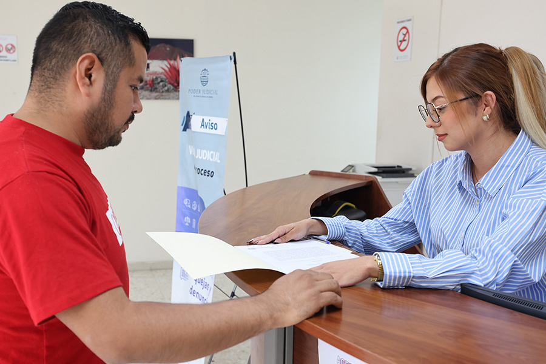
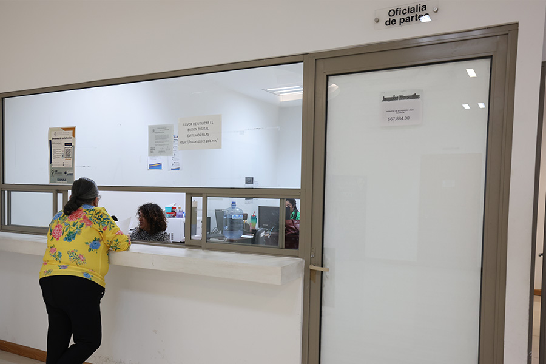
Calidad en los Servicios Proporcionados
En el ejercicio del 2025, a través del Instituto Estatal de Defensoría Pública implementamos diversas acciones orientadas al fortalecimiento de la atención y el acompañamiento que brindamos a la ciudadanía. Cada acción emprendida tuvo como propósito asegurar que toda persona que acude al Instituto reciba una asesoría, representación y defensa con dignidad, eficacia y trato humano.
Nuestro compromiso se fundamenta en escuchar con atención, comprender a profundidad cada caso y responder con soluciones oportunas, poniendo siempre en el centro la calidad del servicio público.
Por ello, para conocer el nivel de satisfacción general de nuestras personas usuarias, realizamos cuatro mil 437 encuestas, a través de las cuales alcanzamos un 98.93 por ciento de apreciación positiva. Este resultado refleja no solo la efectividad del trabajo realizado, sino también la responsabilidad con la que asumimos la tarea de garantizar una defensa pública accesible, profesional y cercana a la comunidad.
El esfuerzo conjunto de las unidades y áreas que integran al Instituto ha permitido reafirmar la confianza de las y los coahuilenses en los servicios de defensoría y asesoramiento legal. Esta labor coordinada impulsa un acceso a la justicia más cercana, íntegra y con estándares que fortalecen el trabajo institucional.
Además, realizamos una medición de satisfacción de todas aquellas parejas que participaron en el Taller de Orientación Prematrimonial. En total, se aplicaron mil 935 cuestionarios mediante la plataforma de Google Drive, cuyo análisis nos permitió valorar el desempeño del servicio y detectar áreas de mejora, obteniendo el 90.50 por ciento de resultado positivo.
Oficialía de Partes
La oportunidad en los tiempos de respuesta hacia las personas justiciables constituye un eje fundamental en nuestra labor; garantizar un acceso más ágil, eficiente y efectivo a la justicia es un reto constante y merece toda nuestra atención. En ese contexto, a través de las Oficialías de Partes trabajamos permanentemente en optimizar cada fase del proceso judicial, desde la recepción de documentos hasta su gestión y entrega a los distintos órganos jurisdiccionales.
Para impulsar la mejora continua en la función de las Oficialías de Partes, durante el año 2025 profundizamos en el aprovechamiento de las tecnologías de la información, con la finalidad de generar mayor celeridad procedimental en la recepción, digitalización, gestión y entrega de oficios, promociones y diversa documentación dirigida a los órganos jurisdiccionales del estado.
La digitalización de documentos ha permitido una tramitación más ágil, eficiente y transparente, facilitando que las personas justiciables puedan mantenerse informadas sobre el estado que guardan sus asuntos, otorgando mayor certidumbre a las partes respecto de las demandas, promociones y documentos que presentan ante los órganos jurisdiccionales, tales como los escritos que dan inicio a procedimientos en materias civil, mercantil y familiar; escritos de término presentados fuera del horario de los juzgados y tribunales en dichas materias, así como en materia penal; escritos que acompañan a las demandas de amparo directo; agravios y solicitudes de medidas cautelares.
De manera complementaria, este año fortalecimos la capacitación continua del personal de la Oficialía de Partes, con el propósito de elevar la calidad del servicio y asegurar que cada documento sea tratado con el cuidado, atención y profesionalismo que merece. Asimismo, realizamos auditorías internas de calidad, lo cual nos permite detectar y atender oportunidades de mejora.
Como resultado de estas acciones, durante el año 2025, en las Oficialías de Partes de los distritos judiciales de Monclova, Piedras Negras, Saltillo y Torreón se recibieron 32 mil 432 demandas iniciales, 219 mil 467 promociones y tres mil 688 exhortos, reflejo del alto volumen de trabajo atendido con eficiencia y compromiso institucional.
Tabla 30. Actividades de Oficialías de Partes del Poder Judicial del Estado de Coahuila de Zaragoza
| Distrito Judicial | Demandas Iniciales | Promociones | Exhortos |
|---|---|---|---|
| Monclova | 8,509 | 60,004 | 594 |
| Río Grande | 3,107 | 17,405 | 337 |
| Saltillo | 22,179 | 172,047 | 2,206 |
| Torreón | 20,816 | 142,058 | 2,757 |
| Total | 32,432 | 219,467 | 3,688 |
Fuente: Oficialías de Partes del Poder Judicial del Estado de Coahuila de Zaragoza. 2025.
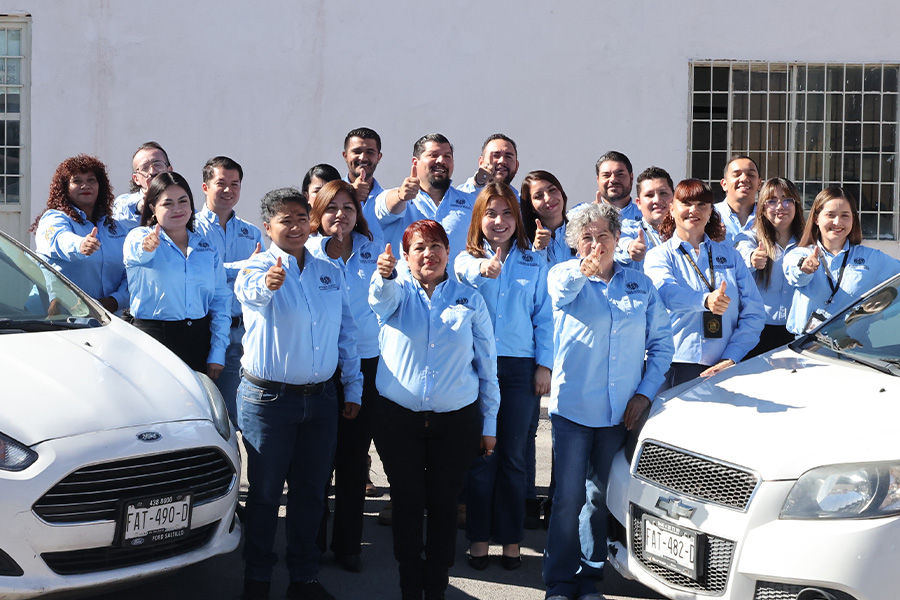
Central de Actuarios
Las centrales de actuarios contribuyen al cumplimiento de la función jurisdiccional al materializar los principios de legalidad, imparcialidad, objetividad, seguridad jurídica y debido proceso, al ejecutar diligencias y notificaciones que inciden directamente en la vida de quienes acuden al sistema judicial. Su trabajo garantiza que las decisiones de las autoridades jurisdiccionales se cumplan con claridad, oportunidad y certeza.
Conscientes de esta trascendencia, durante 2025, emprendimos un proceso integral para fortalecer la función de auxilio jurisdiccional y consolidar un servicio más profesional, cercano y eficiente. Este esfuerzo incluyó acciones dirigidas a perfeccionar las capacidades del personal, mejorar la coordinación operativa y la ampliación de nuestros servicios, con la incorporación de la materia laboral.
Este año, el personal actuarial que estaba adscrito al tribunal especializado en materia laboral pasó a formar parte de la Central de Actuarios, con lo que todas las diligencias realizadas en dicha materia, ahora forman parte de esta Central. Esto con la finalidad de tener un mejor control y programación en las diligencias asignadas, lo que permite actuar con mayor eficiencia, así como disminuir errores y atrasos de los procesos que se llevan a cabo.
En este sentido, la totalidad del personal de la Central de Actuarios fue capacitado en materia laboral, reforzando términos, definiciones, tipos de diligencias y demás particularidades que se presentan de manera específica dentro de la materia, esto con el objetivo de buscar mayor precisión en la implementación de las diligencias encomendadas y así poder cumplir correctamente en tiempo y forma con el proceso de las mismas.
Asimismo, se redujo de manera notable la invalidez de notificaciones, se evitaron retrasos innecesarios en el avance de los procesos judiciales y se fortaleció la protección de los derechos procesales de las partes. En conjunto, las Oficialías de Partes de Saltillo y Torreón, así como la Central Hipotecaria, registraron a lo largo de 2025 un total de 38 mil 340 boletas diligenciadas, cifra que refleja el compromiso y la efectividad del trabajo realizado.
Tabla 31. Boletas diligenciadas por las Centrales de Actuarios del Poder Judicial del Estado de Coahuila de Zaragoza
| Central de Actuarios | Boletas diligenciadas |
|---|---|
| Central de Actuarios de Saltillo | 25,125 |
| Central de Actuarios de Torreón | 11,843 |
| Central Hipotecaria | 1,372 |
| Total | 38,340 |
Fuente: Central de Actuarios. Poder Judicial del Estado de Coahuila de Zaragoza. 2025.
Archivo Judicial General
El acervo documental de una institución es mucho más que un conjunto de expedientes: es la memoria viva de su trabajo diario y el reflejo más claro de su evolución. Por esa razón, su cuidado exige un compromiso permanente con la organización, la preservación y el manejo responsable de cada documento, garantizando que ese patrimonio para fortalecer la memoria institucional y promover el acceso al conocimiento jurídico.
Con esta visión, desde el Archivo Judicial General impulsamos acciones constantes para perfeccionar los criterios que guían la gestión de la información. Nuestro propósito es avanzar hacia procesos cada vez más precisos y eficientes, apoyándonos en herramientas tecnológicas que permitan modernizar la administración de los archivos sin perder el valor histórico que resguardan.
Este año para contribuir a un mejor control y organización del Archivo Judicial de este Tribunal, realizamos un amplio inventario documental a través del Sistema Integral de Búsqueda de Expedientes y Digitalización (SIBED). Esta herramienta permite que el personal jurisdiccional y las personas usuarias consulten, de forma ágil y precisa, la ubicación de los expedientes, optimizando los procesos de solicitud, préstamo y devolución entre órganos no jurisdiccionales y juzgados, garantizando bitácoras y registros exactos de cada movimiento documental.
Durante este año enviamos 120 mil 576 expedientes, tocas, folios y expedientillos a los archivos judiciales. Esto ha permitido que los órganos jurisdiccionales mantengan únicamente los asuntos activos, liberando espacio operativo y agilizando su función.
Adicionalmente, registramos 42 mil 443 solicitudes realizadas por los juzgados a los distintos archivos judiciales, quedando cada una respaldada con su historial digital, expedimos 122 mil 210 copias simples y 61 mil 930 copias certificadas, además de atender oportunamente 21 mil 420 consultas.
Tabla 32. Actividad del Archivo Judicial General del Poder Judicial, por Distrito Judicial
| Distrito Judicial | Expedientes remitidos por juzgados | Expedientes remitidos a los juzgados | Consultas | Expedición de copias simples | Expedición de copias certificadas |
|---|---|---|---|---|---|
| Acuña | 16,521 | 13,918 | 7,752 | 819 | 4,590 |
| Monclova | 6,946 | 2,397 | 1,949 | 19,122 | 6,241 |
| Región Carbonífera | 18,221 | 13,028 | 6,899 | 57,664 | 27,231 |
| Río Grande | 5,662 | 946 | 712 | 11,037 | 3,854 |
| Saltillo | 17,075 | 5,388 | 54 | 1,286 | 2,720 |
| Torreón | 56,151 | 6,766 | 4,054 | 32,282 | 17,294 |
| Total | 120,576 | 42,443 | 21,420 | 122,210 | 61,930 |
Fuente: Archivo Judicial General. Poder Judicial del Estado de Coahuila de Zaragoza. 2025.
Como parte de esta modernización, también implementamos el Sistema Digital de Gestión de Documentos de Archivo (SIGDDA) en la Sala Regional, los Tribunales Distritales y los Tribunales Laborales. Como resultado, inventariamos 519 mil 073 documentos jurisdiccionales, fortaleciendo la trazabilidad, el control y el acceso a la información judicial.
Además, con la finalidad de generar técnicas archivísticas que garanticen la organización, conservación, disponibilidad y localización expedita de los documentos de archivo, la Comisión Interdisciplinaria de Archivos, a través del Acuerdo C-145/2025 del Consejo de la Judicatura, estableció los criterios para el Cuadro de Clasificación Archivística, el Catálogo de Disposición Documental y las actas de baja documental de los expedientes y documentos judiciales generados en los órganos jurisdiccionales, no jurisdiccionales y administrativos.
Estos instrumentos establecen qué documentos se generan en cada área, sus valores primarios y secundarios, los tiempos de conservación y su destino final, ya sea transferenciaal Archivo Histórico o su respectiva baja documental.
Además, se documentaron los procedimientos operativos en el Manual de Procedimientos para transferencias, solicitudes y bajas documentales. Este manual brinda múltiples beneficios:
• Estandariza y uniforma los procesos archivísticos.
• Garantiza el cumplimiento normativo.
• Mejora el control y seguimiento de solicitudes y transferencias.
• Fortalece la transparencia y la rendición de cuentas.
• Optimiza tiempos, recursos y espacios físicos.
• Consolida una gestión documental moderna, ordenada y confiable.
En el Archivo Judicial General, la baja, destrucción y reciclaje de documentos sin valor permite liberar espacios, proteger datos, reducir costos y fomentar la sostenibilidad. Por ello, la Presidencia del Tribunal Superior de Justicia, la Sala Colegiada Civil y Familiar, la Oficialía Común de Partes y diversos juzgados del Distrito Judicial de Saltillo, remitieron documentos sin valor administrativo para su disposición final conforme a la normatividad vigente.
Destaca la revisión de 264 cajas provenientes de juzgados penales suprimidos y 269 cajas canalizadas por la Secretaría General de Acuerdos del Pleno, determinando su destino final conforme a los criterios archivísticos autorizados. Esta labor nos permitió reorganizar y centralizar archivos de áreas estratégicas como Recursos Materiales, Auditoría Interna, Presidencia del Tribunal Superior de Justicia, Visitaduría Judicial General y Secretaría General de Acuerdos del Pleno, mejorando su resguardo y acceso.
Continuando con nuestro propósito de profesionalizar la gestión documental, impartimos capacitaciones presenciales y virtuales para 129 personas de áreas jurisdiccionales y administrativas del Distrito Judicial de Saltillo, asegurando la correcta aplicación del proceso de baja documental y reduciendo riesgos en la eliminación de información que debe conservarse.
Además, en coordinación con el Instituto de Especialización Judicial, realizamos dos conferencias sobre el ciclo vital del documento y ética archivística, impartidas por el Mtro. Alfredo Ríos Guajardo, director del Archivo Judicial del Poder Judicial de Nuevo León. Con la participación de 177 personas, se fortalecieron los conocimientos técnicos y éticos del personal, promoviendo buenas prácticas, manejo responsable de la información y estándares profesionales en la gestión documental institucional.
Este compromiso con la modernización y el buen manejo del archivo judicial refuerza la confianza ciudadana y contribuye a construir un sistema de justicia más cercano, de calidad, eficiente y profesional.
Estadística Jurisdiccional
El fortalecimiento de un Poder Judicial cercano, sensible y accesible no solo implica garantizar presencia en todas las regiones de la entidad, sino también asegurar que los servicios de administración de justicia se presten de manera oportuna, especializada cumpliendo con los estándares de calidad que la ciudadanía merece.
Para cumplir con el compromiso de atender las necesidades de administración de justicia, en el Poder Judicial de Coahuila realizamos esfuerzos permanentes para alcanzar una distribución equilibrada de las cargas de trabajo entre los diversos órganos jurisdiccionales que lo conforman.
Esta labor es fundamental para brindar a la población la confianza de que los asuntos sometidos a consideración judicial serán tramitados y resueltos conforme a los principios de celeridad, eficiencia, imparcialidad y profesionalismo que rigen nuestra función.
En este marco, la estadística jurisdiccional significa una herramienta que posibilita la planeación, el diseño y la implementación de políticas públicas orientadas a optimizar el funcionamiento institucional y a consolidar procesos que favorezcan la impartición de justicia. Asimismo, es un mecanismo que permite identificar áreas de oportunidad, mejorar prácticas de gestión y promover un desempeño más efectivo de las juzgadoras y los juzgadores.
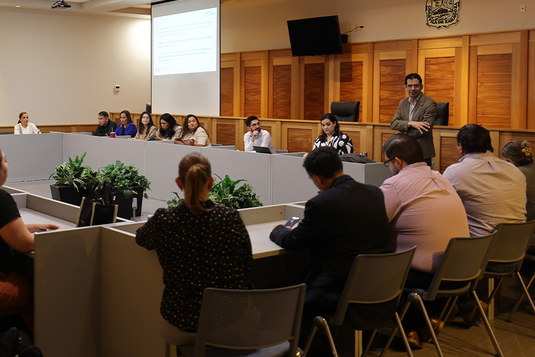
También, esta labor permite anticipar necesidades institucionales, optimizar la asignación de recursos, promover la modernización de procesos y garantizar que la operación jurisdiccional responda a las exigencias de un entorno dinámico y en constante transformación.
De este modo, la gestión basada en evidencia se convierte en un elemento esencial para la consolidación de un Poder Judicial más eficiente, transparente y orientado al servicio público.
Para comprender la dinámica de nuestro trabajo y reforzar la confianza de la ciudadanía en la labor jurisdiccional, a continuación, presentamos una síntesis de los datos estadísticos que documentan la actividad desarrollada en segunda instancia por las Salas Colegiadas, el Tribunal Especializado y los Tribunales Distritales, así como de los Órganos Jurisdiccionales de Primera Instancia.
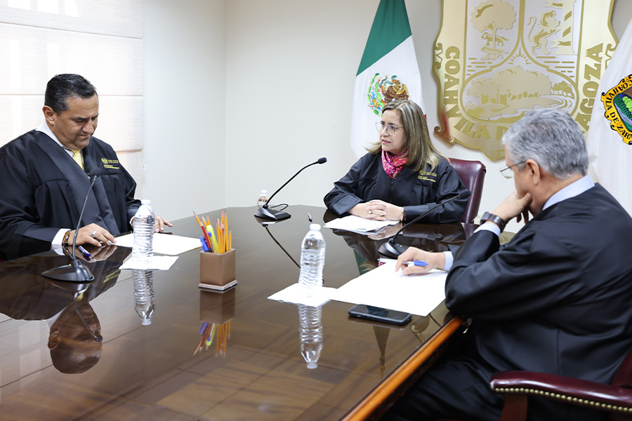
Justicia en los Tribunales de Alzada
En concordancia con la Reforma Constitucional Federal, en el Poder Judicial del Estado de Coahuila de Zaragoza, realizamos las adecuaciones correspondientes para dar cumplimiento a este mandato constitucional, de tal manera que la Sala Colegiada Civil y Familiar fue objeto de reorganización para, dar atención a los asuntos civiles y mercantiles, así como familiares por separado, para dar paso a la Sala Colegiada Civil y Mercantil, y la Sala Colegiada Familiar.
En este contexto, a partir de mediados del año 2025, el Poder Judicial cuenta con cuatro salas colegiadas: La Sala Colegiada Civil y Mercantil, la Sala Colegiada Familiar, la Sala Colegiada Penal y la Sala Regional, con sede en Torreón.
Estos órganos jurisdiccionales son los encargados de atender y resolver los recursos de apelación en contra de las resoluciones formuladas por los juzgados de primera instancia, según la materia de su competencia; emiten jurisprudencias y dictaminan sobre excusas y recusaciones.
Las labores desarrolladas durante el año que informamos por la Sala Colegiada Civil y Mercantil, la Sala Colegiada Familiar, la Sala Colegiada Penal y la Sala Regional del Tribunal Superior de Justicia se muestran a continuación:
Tabla 33. Labores de la Sala Colegiada Civil y Mercantil, Sala Colegiada Familiar, Sala Colegiada Penal y Sala Regional.
| Rubro | Sala Colegiada Civil y Mercantil | Sala Colegiada Familiar | Sala Colegiada Penal | Sala Regional |
|---|---|---|---|---|
| Asuntos recibidos en 2025 | 233 | 63 | 122 | 257 |
| Asuntos resueltos / concluidos | 293 | 90 | 124 | 242 |
| Asuntos en trámite a la fecha | 67 | 3 | 18 | 15 |
| Sentencias pronunciadas | 269 | 88 | 118 | 272 |
Fuente: Secretaría Técnica y de Planeación de la Presidencia del Tribunal Superior de Justicia del Estado de Coahuila de Zaragoza. Poder Judicial del Estado de Coahuila de Zaragoza. 2025.
Justicia en el Tribunal de Conciliación y Arbitraje
El órgano jurisdiccional facultado para conocer los conflictos presentados entre dependencias estatales, municipales u órganos autónomos es el Tribunal de Conciliación y Arbitraje, si bien de acuerdo a las reformas constitucionales de 2024 se encuentra en proceso de transición al Poder Ejecutivo, sus actividades de 2025 como parte del Poder Judicial se sintetizan en la siguiente tabla:
Tabla 34. Labores del Tribunal de Conciliación y Arbitraje
| Rubro | Cantidad |
|---|---|
| Asuntos atendidos | 3,422 |
| Asuntos en trámite al inicio de 2025 | 2,727 |
| Asuntos recibidos | 695 |
| Asuntos desahogados | 217 |
| Trámite a la fecha | 3,205 |
| Sentencias pronunciadas | 317 |
| Diligencias actuariales | 2,218 |
Fuente: Secretaría Técnica y de Planeación de la Presidencia del Tribunal Superior de Justicia del Estado de Coahuila de Zaragoza. Poder Judicial del Estado de Coahuila de Zaragoza. 2025.
Justicia en los Tribunales Distritales
En la entidad operan cuatro Tribunales Distritales ubicados en las ciudades con mayor población: el Primer Tribunal Distrital se encuentra en Saltillo; el Segundo Tribunal Distrital, en Torreón; el Tercer Tribunal Distrital, en Monclova; y el Cuarto Tribunal Distrital, en Piedras Negras.
Estos tribunales se encargan de revisar y resolver los recursos de apelación y queja que se presentan contra resoluciones dictadas por los juzgados de primera instancia. A continuación, se presenta la información estadística correspondiente al año que se informa, relacionada con el trabajo realizado por estos tribunales.
Tabla 35. Actividades en los Tribunales Distritales
| Rubro | Primer Tribunal Distrital | Segundo Tribunal Distrital | Tercer Tribunal Distrital | Cuarto Tribunal Distrital |
|---|---|---|---|---|
| Asuntos atendidos | 493 | 738 | 327 | 205 |
| Asuntos en trámite al inicio de 2025 | 57 | 112 | 59 | 11 |
| Asuntos recibidos | 600 | 594 | 267 | 189 |
| Asuntos concluidos/ resueltos | 485 | 621 | 274 | 197 |
| Trámite a la fecha | 8 | 36 | 53 | 8 |
| Sentencias pronunciadas | 398 | 436 | 214 | 144 |
| Diligencias actuariales | 4380 | 2037 | 1926 | 410 |
Fuente: Secretaría Técnica y de Planeación de la Presidencia del Tribunal Superior de Justicia del Estado de Coahuila de Zaragoza. Poder Judicial del Estado de Coahuila de Zaragoza. 2025.
Justicia Especializada
La especialización de los órganos jurisdiccionales responde al compromiso del Poder Judicial con una justicia más sensible a las realidades que enfrenta la sociedad coahuilense.
Este enfoque especializado permite que quienes imparten justicia cuenten con un conocimiento profundo de las dinámicas propias de cada materia, fortaleciendo nuestra capacidad para atender con mayor precisión los conflictos que impactan de manera directa la vida de las personas, colocando a la ciudadanía en el centro de la función jurisdiccional.
1. Juzgado Especializado en Materia de Adopciones
En el Poder Judicial del Estado de Coahuila reforzamos nuestras acciones para garantizar la protección integral de los derechos de niñas y niños, colocando en el centro de todas nuestras decisiones el interés superior de la niñez. Bajo este enfoque, impulsamos la creación del Juzgado Especializado en Materia de Adopciones, con el propósito de brindar una atención jurisdiccional más ágil, especializada y sensible a los casos que involucran a niñas y niños en situación de vulnerabilidad.
La creación de este juzgado responde a la necesidad de atender, con mayor prontitud y eficacia, los procedimientos relacionados con la adopción, la pérdida de la patria potestad y la ratificación de medidas urgentes de protección, evitando procesos prolongados y reduciendo los efectos negativos que la institucionalización genera en el desarrollo integral de niñas y niños.
Este esfuerzo se ha desarrollado de manera coordinada con el Sistema para el Desarrollo Integral de la Familia y Protección de Derechos (DIF Coahuila) y con la Procuraduría para Niños, Niñas y la Familia (PRONNIF), fortaleciendo el trabajo interinstitucional y asegurando que cada actuación se realice con enfoque de derechos humanos y perspectiva de niñez.
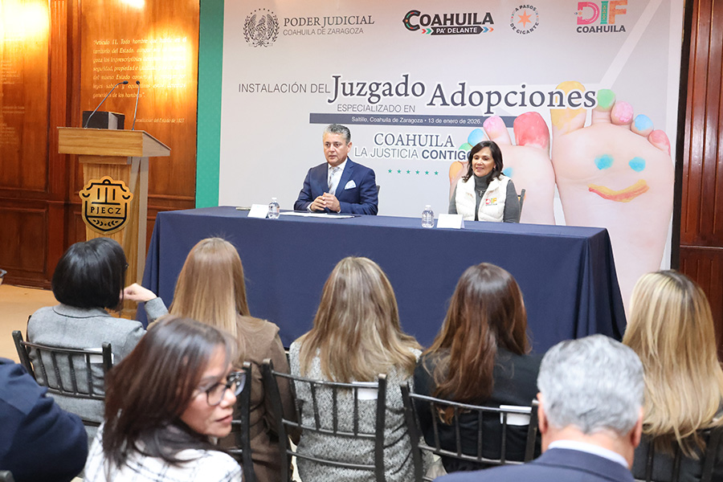
La especialización en materia de adopciones permitirá una atención más eficiente de los procedimientos, contribuyendo a la reducción de los tiempos procesales y favoreciendo que niñas y niños bajo custodia del Estado puedan acceder, en menor tiempo, a una solución definitiva que restituya su derecho a vivir en familia.
Con la creación del Juzgado Especializado en Materia de Adopciones, en el Poder Judicial del Estado de Coahuila refrendamos nuestro compromiso de trabajar por las niñas y los niños coahuilenses, fortaleciendo un sistema de justicia que responda de manera oportuna, especializada y humana a sus necesidades.
2. Juzgados Especializados en Materia Hipotecaria
Consolidamos el modelo de juzgados especializados en materia hipotecaria con la finalidad de responder a la necesidad de atender, de manera focalizada, los asuntos relativos al patrimonio familiar y otorgar mayor certeza jurídica, así como garantizar una eficiente impartición de justicia.
A través de estos juzgados brindamos atención integral a los procedimientos relacionados con la constitución, ampliación, división, registro, extinción, nulidad y cancelación de hipotecas, así como a los relativos al pago y la prelación de los créditos que dichas garantías respaldan, asegurando un análisis jurídico exhaustivo y resoluciones acordes con la normatividad aplicable.
Los juzgados especializados en materia hipotecaria se encuentran ubicados en Saltillo y Torreón, desde donde conocen y atienden los asuntos procedentes de los diversos distritos judiciales del estado, lo que permite una atención homogénea en la resolución de este tipo de controversias.
Durante el año 2025, estos órganos jurisdiccionales registraron mil 459 asuntos recibidos y emitieron 629 sentencias, reflejando un sistema de justicia especializado y eficiente en materia hipotecaria.
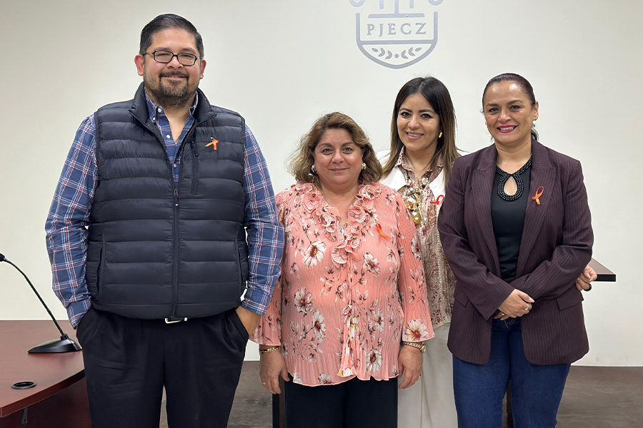
3. Tribunales Laborales
En octubre de 2022, Coahuila inició la implementación gradual del nuevo sistema de justicia laboral. Para el cumplimiento de esta disposición se instalaron seis tribunales laborales ubicados en los distritos judiciales de Acuña, Monclova, Región Carbonífera, Río Grande, Saltillo y Torreón.
Estos tribunales tienen la facultad de conocer y resolver los conflictos laborales, tanto individuales como colectivos, que se presenten en el estado, garantizando una justicia laboral que proteja los derechos de las personas trabajadoras y de los empleadores.
En el Poder Judicial del Estado privilegiamos la solución pacífica de los conflictos, fomentando acuerdos justos y equitativos, y trabajamos de manera permanente para fortalecer y mejorar la administración de justicia. Por lo que, durante 2025, recibimos cinco mil 694 demandas laborales; y resolvimos, mediante sentencia, convenios de conciliación u otros mecanismos de conclusión, dos mil 753 asuntos.
Justicia en los Juzgados de Primera Instancia
Los juzgados de primera instancia del Poder Judicial del Estado de Coahuila de Zaragoza representan el eje fundamental del sistema de impartición de justicia, al constituir el primer nivel de atención y respuesta a las demandas de las y los coahuilenses. A través de estos órganos jurisdiccionales, distribuidos en ocho distritos judiciales, atendemos de manera directa los conflictos que surgen en la vida cotidiana, garantizando el acceso efectivo a la justicia.
En los juzgados de primera instancia se conocen y resuelven asuntos correspondientes a diversas materias, entre las que se encuentran la familiar, mercantil, civil, civil hipotecaria, ambiental, laboral, y penal en su modalidad de juzgado de control y especializado en violencia familiar contra la mujer, lo que permite una atención focalizada y acorde a la naturaleza de cada controversia.
Mediante estos juzgados brindamos certeza jurídica a las partes, protegemos los derechos humanos y contribuimos a la solución pacífica de los conflictos, fortaleciendo así la confianza de la ciudadanía en las instituciones de justicia.
El Poder Judicial de Coahuila mantiene un compromiso permanente con la mejora continua en la impartición de justicia, mediante la profesionalización del personal, la modernización de los procesos y la optimización de los tiempos de respuesta, con el objetivo de ofrecer un servicio judicial eficiente, accesible y cercano a la sociedad.
Igualmente, en cumplimiento del Acuerdo C-141/2023 emitido por el Consejo de la Judicatura, mediante el cual se instruyó a cada órgano jurisdiccional de primera instancia, elaborar un inventario anual de los expedientes en trámite, se logró registrar el número de asuntos vigentes a cargo de cada juzgado, permitió el envío oportuno de remesas al Archivo Judicial General y facilitó el avance en el desahogo de aquellos asuntos que se encontraban bajo un estatus de caducidad o con falta de actividad procesal.
Durante 2025, los órganos jurisdiccionales de primera instancia atendieron 266 mil 471 asuntos correspondientes a los iniciados en este año y en ejercicios anteriores. Recibimos 80 mil 266 asuntos y desahogamos 116 mil 241. Por lo que, actualmente contamos con 160 mil 579 asuntos en trámite en todas las materias.
Gráfica 1. Distribución de la carga de trabajo de los Juzgados de Primera Instancia, por materia
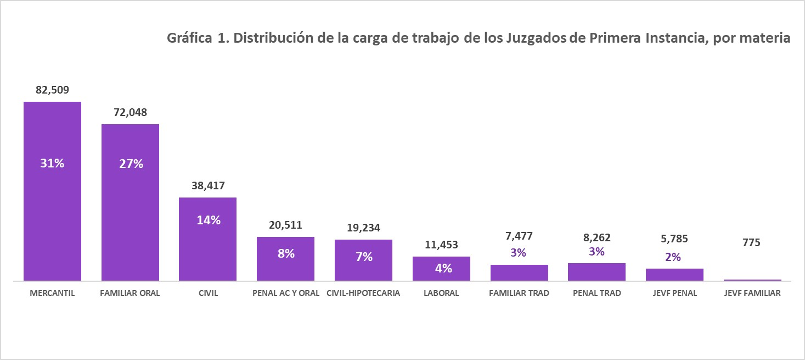
Fuente: Secretaría Técnica y de Planeación de la Presidencia del Tribunal Superior de Justicia del Estado de Coahuila de Zaragoza. Poder Judicial del Estado de Coahuila de Zaragoza. 2025.
En seguida se describen las principales acciones realizadas por los Juzgados de Primera Instancia, agrupadas según la materia de su competencia:
Tabla 36. Actividades en Materia Civil
| Rubro | Cantidad |
|---|---|
| Asuntos atendidos | 38,417 |
| Asuntos en trámite al inicio de 2025 | 25,704 |
| Asuntos recibidos | 9,135 |
| Regresaron a trámite | 3,578 |
| Trámite a la fecha | 25,533 |
| Asuntos desahogados | 12,884 |
| Sentencias emitidas | 2,183 |
| Acuerdos pronunciados | 127,225 |
| Diligencias actuariales | 36,660 |
| Medios de auxilio judicial (exhortos, despachos, requisitorias, encomiendas) | 1,142 |
| Convenios | 99 |
| Audiencias celebradas | 6,777 |
Fuente: Secretaría Técnica y de Planeación de la Presidencia del Tribunal Superior de Justicia del Estado de Coahuila de Zaragoza. Poder Judicial del Estado de Coahuila de Zaragoza. 2025.
Tabla 37 . Actividades en Materia Civil-Hipotecaria
| Rubro | Cantidad |
|---|---|
| Asuntos atendidos | 19,234 |
| Asuntos en trámite al inicio de 2025 | 17,749 |
| Asuntos recibidos | 1,459 |
| Regresaron a trámite | 26 |
| Trámite a la fecha | 16,641 |
| Asuntos desahogados | 2,593 |
| Sentencias emitidas | 629 |
| Acuerdos pronunciados | 10,776 |
| Diligencias actuariales | 809 |
| Medios de auxilio judicial (exhortos, despachos, requisitorias, encomiendas) | 92 |
| Convenios | 29 |
| Audiencias celebradas | 277 |
Fuente: Secretaría Técnica y de Planeación de la Presidencia del Tribunal Superior de Justicia del Estado de Coahuila de Zaragoza. Poder Judicial del Estado de Coahuila de Zaragoza. 2025.
Tabla 38 . Actividades en Materia Familiar bajo el Sistema Tradicional
| Rubro | Cantidad |
|---|---|
| Asuntos atendidos | 7,477 |
| Asuntos en trámite al inicio de 2025 | 5,461 |
| Asuntos recibidos | 46 |
| Regresaron a trámite | 1,970 |
| Trámite a la fecha | 3,568 |
| Asuntos desahogados | 3,909 |
| Sentencias emitidas | 15 |
| Acuerdos pronunciados | 14,300 |
| Diligencias actuariales | 4,315 |
| Medios de auxilio judicial (exhortos, despachos, requisitorias, encomiendas) | 3 |
| Convenios | 65 |
| Audiencias celebradas | 501 |
Fuente: Secretaría Técnica y de Planeación de la Presidencia del Tribunal Superior de Justicia del Estado de Coahuila de Zaragoza. Poder Judicial del Estado de Coahuila de Zaragoza. 2025.
Tabla 39 . Actividades en Materia Familiar Oral
| Rubro | Cantidad |
|---|---|
| Asuntos atendidos | 72,048 |
| Asuntos en trámite al inicio de 2025 | 41,448 |
| Asuntos recibidos | 23,763 |
| Regresaron a trámite | 6,837 |
| Trámite a la fecha | 43,824 |
| Asuntos desahogados | 28,224 |
| Sentencias emitidas | 10,267 |
| Acuerdos pronunciados | 212,744 |
| Diligencias actuariales | 96,715 |
| Medios de auxilio judicial (exhortos, despachos, requisitorias, encomiendas) | 3,110 |
| Convenios | 1,446 |
| Audiencias celebradas | 9,440 |
Fuente: Secretaría Técnica y de Planeación de la Presidencia del Tribunal Superior de Justicia del Estado de Coahuila de Zaragoza. Poder Judicial del Estado de Coahuila de Zaragoza. 2025.
Tabla 40 . Actividades en los Tribunales Laborales
| Rubro | Cantidad |
|---|---|
| Asuntos atendidos | 11,453 |
| Asuntos en trámite al inicio de 2025 | 5,759 |
| Asuntos recibidos | 5,694 |
| Trámite a la fecha | 8,700 |
| Asuntos desahogados | 2,753 |
| Sentencias pronunciadas | 1,105 |
| Diligencias actuariales | 13,707 |
| Medios de auxilio judicial (exhortos, despachos, requisitorias, encomiendas) | 1,316 |
| Convenios | 1,335 |
| Audiencias celebradas | 3,499 |
Fuente: Secretaría Técnica y de Planeación de la Presidencia del Tribunal Superior de Justicia del Estado de Coahuila de Zaragoza. Poder Judicial del Estado de Coahuila de Zaragoza. 2025.
Tabla 41. Actividades en Materia Mercantil
| Rubro | Cantidad |
|---|---|
| Asuntos atendidos | 82,509 |
| Asuntos en trámite al inicio de 2025 | 52,426 |
| Asuntos recibidos | 28,029 |
| Regresaron a trámite | 2,054 |
| Trámite a la fecha | 43,568 |
| Asuntos desahogados | 46,522 |
| Sentencias emitidas | 7,271 |
| Acuerdos pronunciados | 221,201 |
| Diligencias actuariales | 32,484 |
| Medios de auxilio judicial (exhortos, despachos, requisitorias, encomiendas) | 2,259 |
| Convenios | 663 |
| Audiencias celebradas | 11,727 |
Fuente: Secretaría Técnica y de Planeación de la Presidencia del Tribunal Superior de Justicia del Estado de Coahuila de Zaragoza. Poder Judicial del Estado de Coahuila de Zaragoza. 2025.
Tabla 42 . Actividades en Materia Penal bajo el Sistema Tradicional
| Rubro | Cantidad |
|---|---|
| Asuntos atendidos | 8,262 |
| Asuntos en trámite al inicio de 2025 | 920 |
| Asuntos recibidos | 0 |
| Regresaron a trámite | 7,342 |
| Trámite a la fecha | 1,960 |
| Asuntos desahogados | 6,302 |
| Sentencias emitidas | 10 |
| Acuerdos pronunciados | 7,388 |
| Diligencias actuariales | 2,021 |
| Medios de auxilio judicial (exhortos, despachos, requisitorias, encomiendas) | 307 |
| Audiencias celebradas | 107 |
Fuente: Secretaría Técnica y de Planeación de la Presidencia del Tribunal Superior de Justicia del Estado de Coahuila de Zaragoza. Poder Judicial del Estado de Coahuila de Zaragoza. 2025.
Tabla 43. Actividades en Materia Penal del Sistema Acusatorio y Oral
| Rubro | Cantidad |
|---|---|
| Causas atendidas | 20,511 |
| Causas en trámite al inicio de 2025 | 8,992 |
| Causas ingresadas | 8,603 |
| Regresaron a trámite | 2,916 |
| Trámite a la fecha | 12,901 |
| Causas concluidas | 11,335 |
| Audiencias desahogadas | 27,661 |
| Acuerdos pronunciados | 39,921 |
| Diligencias actuariales | 62,728 |
| Medios de auxilio judicial recibidos (exhortos, despachos, requisitorias, encomiendas) | 2,744 |
Fuente: Secretaría Técnica y de Planeación de la Presidencia del Tribunal Superior de Justicia del Estado de Coahuila de Zaragoza. Poder Judicial del Estado de Coahuila de Zaragoza. 2025.
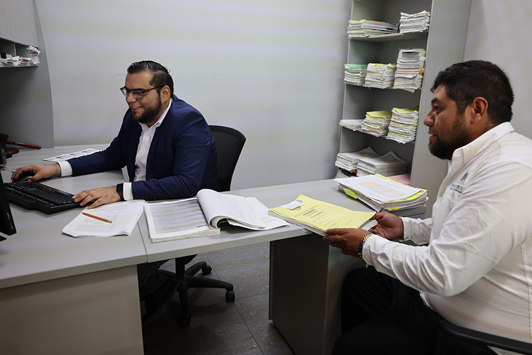
Tabla 44. Actividad en los Juzgados Especializados en Violencia Familiar contra la Mujer. Materia Penal
| Rubro | Cantidad |
|---|---|
| Causas atendidas | 5,785 |
| Causas en trámite al inicio de 2025 | 1,828 |
| Causas ingresadas | 3,495 |
| Regresaron a trámite | 462 |
| Trámite a la fecha | 3,330 |
| Causas concluidas | 1,539 |
| Audiencias desahogadas | 6,001 |
| Acuerdos pronunciados | 8,412 |
| Diligencias actuariales | 23,847 |
| Medios de auxilio judicial recibidos (exhortos, despachos, requisitorias, encomiendas) | 77 |
Fuente: Secretaría Técnica y de Planeación de la Presidencia del Tribunal Superior de Justicia del Estado de Coahuila de Zaragoza. Poder Judicial del Estado de Coahuila de Zaragoza. 2025.
Tabla 45. Actividad en los Juzgados Especializados en Violencia Familiar contra la Mujer. Materia Familiar
| Rubro | Cantidad |
|---|---|
| Asuntos atendidos | 775 |
| Asuntos en trámite al inicio de 2025 | 706 |
| Asuntos recibidos | 44 |
| Regresaron a trámite | 25 |
| Trámite a la fecha | 554 |
| Asuntos desahogados | 180 |
| Acuerdos pronunciados | 976 |
| Diligencias actuariales | 1034 |
| Medios de auxilio judicial (exhortos, despachos, requisitorias, encomiendas) | 2 |
| Audiencias celebradas | 80 |
Fuente: Secretaría Técnica y de Planeación de la Presidencia del Tribunal Superior de Justicia del Estado de Coahuila de Zaragoza. Poder Judicial del Estado de Coahuila de Zaragoza. 2025.
Gráfica 2. Distribución de la carga de trabajo de los Juzgados de Primera Instancia, por Distrito Judicial
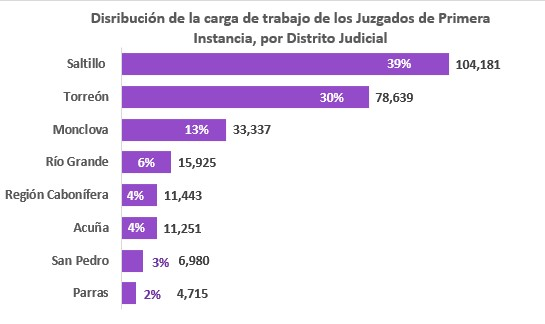
Fuente: Secretaría Técnica y de Planeación de la Presidencia del Tribunal Superior de Justicia del Estado de Coahuila de Zaragoza. Poder Judicial del Estado de Coahuila de Zaragoza. 2025.
Resultados de la Consolidación del Sistema de Justicia Penal Acusatorio y Oral en Coahuila
Reafirmamos nuestro compromiso permanente con el mejoramiento de la operación en materia penal de los órganos jurisdiccionales, con el propósito de contribuir a la preservación de la paz social y de coadyuvar de manera efectiva en la procuración de justicia y en el fortalecimiento de la seguridad en la entidad.
Dentro de las estrategias implementadas, destaca la incorporación y aprovechamiento de las herramientas tecnológicas desarrolladas por el Poder Judicial, así como el mantenimiento de una comunicación continua y coordinada con las y los operadores del sistema penal estatal.
Estas acciones han permitido retroalimentar los procesos de trabajo cotidianos y fomentar una actuación institucional sensible y acorde a los desafíos que nos plantea la sociedad, con el objetivo de consolidar una justicia más accesible, cercana y focalizada.
La adecuada programación de audiencias ha favorecido un mayor control y optimización del tiempo jurisdiccional. En este sentido, el modelo de Audiencias de Acceso Rápido resulta fundamental para disminuir retrasos y evitar cancelaciones en el agendamiento de audiencias. De igual manera, la implementación del buzón electrónico ha permitido que las personas usuarias que cuentan con firma electrónica, accedan a actuaciones judiciales de forma más ágil, eficiente y sustentable, al reducir significativamente el uso de papel y contribuir al cuidado del medio ambiente.
Somos pioneros en la realización y regulación de audiencias concentradas, lo cual permite, agilizar procesos, eficientar recursos y fortalecer la coordinación de las instituciones que conforman el sistema penal en el estado, que se ha distinguido por varios años consecutivos entre los mejor evaluados a nivel nacional.
Respecto a la evaluación del desempeño de las juzgadoras y los juzgadores, la Encuesta Nacional de Victimización y Percepción sobre Seguridad Pública (ENVIPE), elaborada por el Instituto Nacional de Estadística y Geografía (INEGI) en su edición 2025, indica que el 64.1 por ciento de la población de 18 años y más señala que los jueces del estado de Coahuila le generan un nivel de confianza de mucha o algo, porcentaje que se ubica por encima de la media nacional, la cual se situó en 55.9 por ciento.
La duración de las audiencias dentro del proceso penal constituye un elemento determinante, ya que incide directamente en la eficiencia del sistema judicial, el respeto al debido proceso y la calidad en la impartición de justicia. En Coahuila, la duración promedio de las audiencias es de 0:21:59 minutos, lo que posiciona al Poder Judicial como una institución comprometida con la eficiencia, la prontitud y la expeditez en la resolución de los asuntos penales. En ese sentido, informamos que llevamos a cabo 567 audiencias de acceso rápido.
Auditoría Interna
La Auditoría Interna es un órgano auxiliar de la Presidencia del Tribunal Superior de Justicia encargado del control interno. Su función principal consiste en apoyar las labores de supervisión y vigilancia del adecuado manejo de los recursos públicos, así como del cumplimiento de las disposiciones legales y administrativas que aplican a este poder público. En el ejercicio de sus atribuciones, lleva a cabo auditorías de naturaleza contable y administrativa en cada uno de los órganos que integran el Poder Judicial.
Dentro del ámbito de su competencia, corresponde a la Auditoría Interna implementar y ejecutar las acciones que las leyes y demás disposiciones en materia de anticorrupción asignan a los órganos de control interno, contribuyendo con ello al fortalecimiento de la transparencia, la rendición de cuentas y la legalidad en el funcionamiento institucional.
Durante 2025, participamos en actos de presentación y apertura de procedimientos de contratación, conforme a los lineamientos vigentes. Como parte del programa de Puntualidad y Asistencia, supervisamos la operación del sistema de registro de entrada y salida del personal, también recibimos y dimos trámite a las incidencias relacionadas con la asistencia de personal.
Además, en el marco de nuestras acciones de control, elaboramos los informes referentes a los ingresos por servicio de fotocopiado, además de los relativos a los certificados de depósito y órdenes de pago del Fondo de Mejoramiento para la Administración de la Justicia.
Recursos Financieros
La Dirección de Recursos Financieros tiene a su cargo la administración, control, supervisión, optimización y seguimiento de los recursos económicos del Poder Judicial del Estado de Coahuila de Zaragoza, con el objetivo de asegurar una gestión eficiente, responsable y transparente del presupuesto autorizado. Durante el ejercicio fiscal 2025, esta Dirección orientó sus acciones a garantizar la suficiencia presupuestal necesaria para la operación continua de la institución en todos los distritos judiciales.
Presupuesto
Durante el ejercicio fiscal 2025, la Dirección de Recursos Financieros dio seguimiento a la gestión y administración del presupuesto autorizado al Poder Judicial del Estado de Coahuila de Zaragoza. Para dicho ejercicio, el Congreso del Estado aprobó un presupuesto de mil 300 millones de pesos, mismo monto autorizado en el ejercicio de 2024.
La adecuada administración de estos recursos permitió garantizar la suficiencia presupuestal necesaria para la operación institucional, cubriendo el pago de nómina, la adquisición de materiales, servicios básicos, fortalecimiento de la infraestructura, desarrollo tecnológico, y otros gastos indispensables para el funcionamiento del Poder Judicial, y la mejora continua de los servicios judiciales.
Fondo de Mejoramiento para la Administración de Justicia
En el año que se informa, realizamos la administración del Fondo de Mejoramiento para la Administración de Justicia, el cual cuenta con un patrimonio de 483 millones de pesos, mismo que se encuentra en constante fluctuación derivado de la dinámica operativa del propio fondo. Este fondo se ha consolidado como una herramienta clave para el financiamiento de proyectos prioritarios que inciden de manera directa en la calidad, eficiencia y modernización de la impartición de justicia.